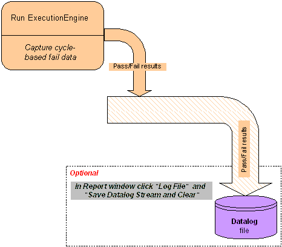

High-volume manufacturing
For the high-volume manufacturing (HVM) use case you need to run the test flow with pass/fail information only:

Set the parameters for the test method as described in Parameters for the ExecutionEngine test method.
Functional changes
- Introduced before SmarTest 6.3.2
- MTP 3.0.1: The ExecuteEngine test method replaces the Memtest test methods.